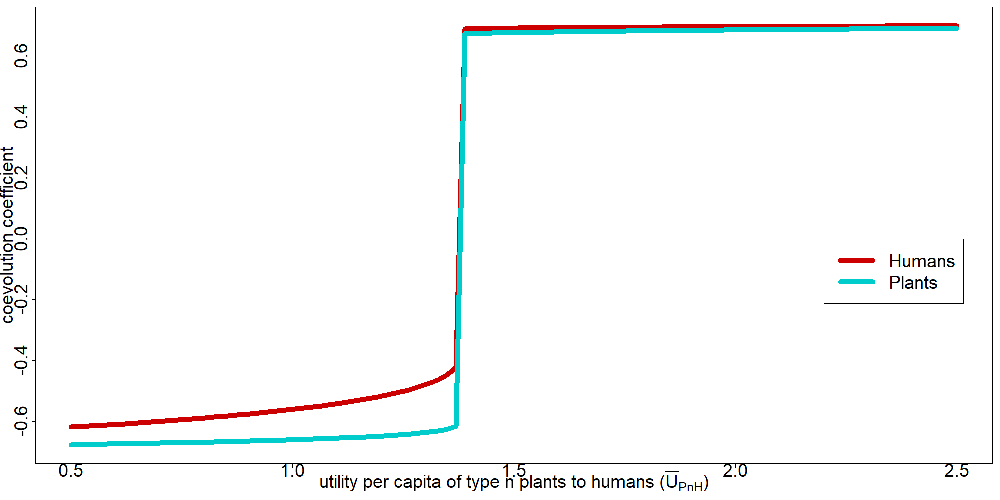

2 One parameter exploration
2.1 Full example (table+plot alternatives)
2.1.1 utility per capita of type n plants to humans (\(\bar{U}_{P_{n}H}\)):
| parameter | value |
|---|---|
| iniH | 10 |
| iniP | 10 |
| n.H | 10 |
| n.P | 10 |
| v.H | 0.15 |
| v.P | 0.15 |
| r.H | 0.05 |
| r.P | 0.1 |
| mU.PnH | 0.5 - 2.5 (sample = 100 ) |
| mU.HnP | 1 |
| mU.P1H | 0.15 |
| mU.H1P | 0.1 |
| U.bHn | 10 |
| U.bPn | 20 |
| U.bH1 | 80 |
| U.bP1 | 100 |
| MaxArea | 200 |


2.2 Exploration on ‘default’ setting for each parameter:
2.2.1 Initial populations of humans and plants (\(init_{H},\,init_{P}\)):


2.2.2 Number of types of humans and plants (\(n_{H},\,n_{P}\)):


2.2.3 level of undirected variation in humans and plants (\(v_{H},\,v_{P}\)):


2.2.4 intrinsic growth rates for human and plant populations (\(r_{H},\,r_{P}\)):


2.2.5 utility per capita of type n plants to humans (\(\bar{U}_{P_{n}H}\)):
2.2.6 utility per capita of type n human to plants (\(\bar{U}_{H_{n}P}\)):

2.2.7 utility per capita of type 1 plants to humans (\(\bar{U}_{P_{1}H}\)):

2.2.8 utility per capita of type 1 humans to plants (\(\bar{U}_{H_{1}P}\)):

2.2.9 utility of other resources to humans of type 1 (\(U_{bH_{1}}\)):

2.2.10 utility of non-anthropic space to type 1 plants (\(U_{bP_{1}}\)):

2.2.11 utility of other resources to type n humans (\(U_{bH_{n}}\)):

2.2.12 utility of non-anthropic space to type n plants (\(U_{bP_{n}}\)):

2.2.13 maximum contiguous area to be used by plants (\(MaxArea\)):

2.3 Bifurcation plot with last 100 time steps
to capture oscillations or ‘slow’ asymptotic stability
INCOMPLETE